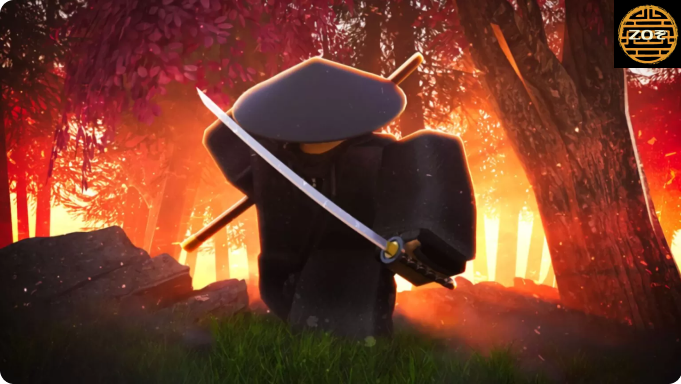

Как играть в Zo Samurai
Многие новички которые не понимают основных, но довольно сложных механик игры не могут справиться с другими людьми, а в итоге их убивают и пинают их труп из-за того что они пытаются всех перекликать, даже тех, кто просто отдыхают.
Первая и самая основная техника: Perfect blocking. Эта техника подразумевает под собой блок поставленный идеально, а точнее когда враг почти вас убил и вы поставили блок в последний момент. Если просто стоять и держать блок вас очень быстро убьют. Если вас враг стоит и держит блок ожидая, что вы его ударите, то при этом можно пнуть его, после этого его блок сломается и его будет очень легко убить. Но если вы очень уверены в себе или у вас быстрое оружие, то вы можете ударить по блоку и сразу поставить свой, тогда если враг не отпрыгнет вы легко поставите идеальный блок и его убьёте.
Вторая, но уже не такая важная техника: Q spamming. Это когда вы достаёте оружие(в основном катану), делаете удар, нажимаете на q(сначала надо выключить эмоции в настройках) и отпрыгиваете назад. (M1-Q-SPACE+SHIFT+S). Ещё с помощью q можно выключать оружие во время удара и тогда удара не будет(можно использовать для того чтобы избегать блока).
Также можно ключать и выключать shift lock (ctrl), чтобы отвлекать вашего врага и неожиданно нападать.